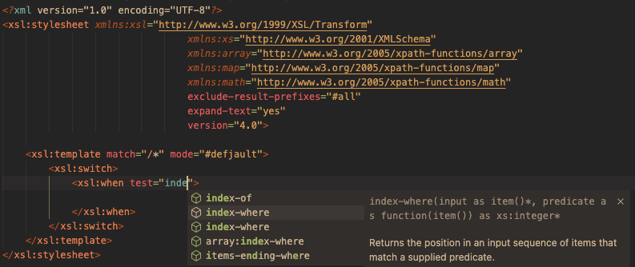

XSLT 4.0
XSLT 4.0 currently comprises a set of draft proposals maintained by the W3C XSLT 4.0 Community group.
DeltaXML's XSLT/XPath language extension provides high-level support for XSLT 4.0 as implemented in Saxon 12.0 and documented here.
Note that, given the independent release cycles for Saxon and the XSLT 4.0 draft, there will be differences between the implementation and the draft specification. Some parts of the specification are likely to change significantly before it is finalized.
We will endeavour to keep this extension up to date with the latest Saxon XSLT 4.0 implementation. Earlier versions of XSLT 4.0 will not be supported for auto-completion and linting.
Editing XSLT 4.0
The version attribute on the stylesheet root element controls the XSLT version supported by the linter and for auto-completion. When the version attribute on the stylesheet root element is set to 4.0, auto-completion for XSLT instructions and attributes and XPath functions will be included.

Running XSLT 4.0
When invoking SaxonJ (Java) for XSLT 4.0 with an XSLT task from VS Code,
the allowSyntaxExtensions40 must be set on
in the task defined in tasks.json. The task invokes Saxon via its command-line
interface with the configuration property --allowSyntaxExtensions:on.
Other Editors for XSLT 4.0
The Oxygen XML 25.0 editor also provides language support for XSLT 4.0. It supports the earlier Saxon 11 implementation of XSLT 4.0.
While Oxygen does need to be purchased, it has the advantage of including Saxon-EE built-in, so you will not need to purchase Saxon separately. Major versions of Oxygen are normally released annually so the next update is expected in October 2023. Oxygen XML provides an integrated solution for XML developers and content authors, and hosts an array of other features.